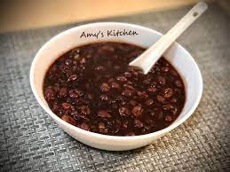

Aralia's Restaurant
美食介紹
我們餐廳以提供甜點、下午茶為主，但也有其他主餐可供顧客選擇~
糕點
巧克力布朗尼
50$
又稱為布朗尼、軟糖蛋糕、簡稱軟糖糕，是一種方形的巧克力烘焙甜點。根據不同的組成密度，布朗尼有很多種型態，可能是比較濕潤的口感，或是比較像蛋糕偏乾的口感。 食材包含榛果、糖霜、奶油起司、巧克力碎等。
ღ(๑╯◡╰๑ღ)
提拉米蘇
40$
又稱為堤拉米酥，是一種著名的義大利式甜點，它是由泡過咖啡或蘭姆酒的手指餅乾，加上一層馬斯卡彭起司、蛋黃及糖的混合物，然後再在蛋糕表面灑上一層可可粉而成，口感細膩飽滿，是一道老少皆宜的甜點。
乳酪蛋糕
40$
主要是由新鮮起司、砂糖、蜂蜜、楓糖漿、雞蛋、麵粉及明膠為主體，餡餅皮、海綿蛋糕片或消化餅乾碎屑與奶油攪拌壓實為底部所製成的一款蛋糕。
草莓大福
45$
將大大的福氣，
鑲入這一顆顆飽滿扎實的大福中，
清香的米香味，
濃密飽滿的內餡，
最佳賞味的期限雖短，
但絕對值得您口齒留香，
嚐過後念念不忘。
甜湯
西米露
45$
西米露又叫西谷米，是印度尼西亞特產，西米有的是用木薯粉、麥澱粉、苞谷粉加工而成，有的是由棕櫚科植物提取的澱粉製成，是一種加工米，形狀像珍珠。
紫米紅豆粥

40$
紅豆與紫米都含有豐富的營養素，天冷時來碗熱騰騰的紅豆紫米粥，真的是超級暖心又暖胃～
酒釀湯圓
55$
酒釀湯圓是甜品點心菜譜之一，以湯圓為製作主料，口味屬於甜味。酒糟湯圓是中國民間一道歷史悠久的小吃，廣泛流行於長江流域，如四川、湖南、江浙等地。具有清香爽口，略帶酒味卻不濃烈的口感特點。
冰品
雪花冰
70$
從吃起來、看起來的模樣來取名的「雪花冰」，冰塊本身已經調好牛奶、芒果、草莓、抹茶、花生、雞蛋、巧克力，再用剉冰機雹出絲絲冰屑，吃起來細緻綿密，就像雪花一樣，還有濃濃水果香，加上各家獨創淋醬，味道更加鮮美，是年輕人的最愛，現在還有從日本引進的抹茶，或是加上生雞蛋的特殊口味。
鴉片粉圓
50$
主要是粉圓、芋圓、地瓜圓，這3款為主配料，地瓜圓和芋圓是扁的圓型，透明色的是軟Q珍珠，堅持自家手作，堅持天然食材，琥珀色粉圓晶亮可口，份量十足，讓人食指大動。 光看這晶瑩剔透、QQ彈牙的粉圓，充滿咀嚼口感，很有攪勁，散發自然本身熬煮的甜味，帶點冰塊的涼度，好沁涼消暑，好好吃。
芒果冰沙
55$
有別於傳統的刨冰加入粉圓、芋圓、仙草等，芒果冰是以新鮮的芒果、煉乳、芒果冰淇淋覆蓋在剉冰或綿綿冰上面，清涼解暑。 許多地方的傳統冰店都紛紛賣起芒果冰或各式水果冰。
主餐區
- 排餐
威靈頓牛排
150$
羊小排
130$
豬排
110$
雞腿排
120$
- 燉飯
鴨片野菇燉飯
85$
松露海鮮燉飯
105$
香蒜鮮蝦燉飯
95$
- 義大利麵
白酒蛤蠣義大利麵
85$
青醬義大利麵
75$
番茄義大利麵
65$